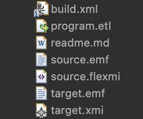

ETL
Epsilon's core is the general purpose model management language called Epsilon Object Language (EOL). EOL is meant to be reused in task specific languages. One such language is Epsilon Transformation Language (ETL) which is used to perform model-to-model transformations. ETL is a hybrid of declarative and imperative paradigms. It provides abstract rule-based execution of tasks as well as imperative EOL features to handle various transformation needs. ETL can be used to transform an arbitrary number of input models into a arbitrary number of output models of different modelling languages and technologies in a rule-based and modular manner.
Project Structure
An ETL model-to-model transformation project (see image below) requires a source model, source metamodel, target metamodel, an ETL program that contains the rules and transformations between the source and target model, and a build file which loads all EMF models and runs the ETL program to generate the target model (an XMI file in this case).

Installation
To use ETL, you just need to install Epsilon on Eclipse.
ETL Basics
Before you get started on your own ETL project, let's introduce the basics of ETL through the syntax and semantics.
Abstract Syntax
classDiagram
class TransformRule {
-name: String
-abstract: Boolean
-lazy: Boolean
-primary: Boolean
-greedy: Boolean
-type: EolModelElementType
-guard: ExecutableBlock<Boolean>
-body: ExecutableBlock<Void>
}
class Parameter {
-name: String
-type: EolType
}
class NamedStatementBlockRule {
-name: String
-body: StatementBlock
}
EolModule <|-- ErlModule
EtlModule --|> ErlModule
Pre --|> NamedStatementBlockRule
Post --|> NamedStatementBlockRule
ErlModule -- Pre: pre *
ErlModule -- Post: post *
EtlModule -- TransformRule: rules *
TransformRule -- Parameter: source
TransformRule -- Parameter: targets *
TransformRule -- TransformRule: extends *The figure above represents ETL at a high level. In ETL, modules represent the model transformations. EtlModule can have one or more transformation rules (TransformRule).
Each TransformRule provides a mapping between a source model parameter and target model parameter(s). It has some important characteristics:
- The name of a rule is unique within the context of a module.
- Each rule has only one
sourceparameter and can have one or moretargetparameters. - A transformation rule can
extendother rules. - You can declare a rule as
abstract,primaryand/orlazy(explained in the next section). - An optional 'guard' selection statement can be defined to filter only certain elements (of specific attributes) that conform to the type of the
sourceparameter. - Each rule has a
body. This is a block of EOL statements where the logic for assigning field values of target model is imperatively defined.
ETL also allows users to declare pre and post blocks which are executed before and after the transformation rules.
Warning
These pre and post blocks are different to the pre-/post-condition annotations available for EOL user-defined operations
Concrete Syntax
The basic format of an ETL document is as follows:
rule <name>
transform <sourceParameterName>:<sourceParameterType>
to <targetParameterName>:<targetParameterType>
(,<targetParameterName>:<targetParameterType>)* {
//Transformation rule body is comprised of EOL statement(s)
statement+
}
Name of a rule is uniquely identified within an ETL module and it can contain numbers from 0-9. All contents in a rule's scope are indented. transform statement requires the name and type of the source parameter. to statement requires the name and type of the target parameter. There can be multiple target parameters which are each separated using comma (,). Curly braces ({}) just after the to statement defines the scope of the rule's body. The body comprises of EOL statement(s) that can assign attribute values to target model elements.
ETL can also have optional attributes and statements that increase usability of the tool. The options are structured in the following manner:
(@abstract)?
(@lazy)?
(@primary)?
rule <name>
transform <sourceParameterName>:<sourceParameterType>
to <targetParameterName>:<targetParameterType>
(,<targetParameterName>:<targetParameterType>)*
(extends <ruleName> (, <ruleName>*)? {
(guard (:expression)|({statementBlock}))?
statement+
}
Note: (option)? is meant to show optional fields and is not part of the actual syntax
@abstract, @lazy and @primary optional attributes of a rule are defined on the line prior to the rule keyword. @abstract is used to declare rules that will be extended using the programming concept of inheritance. Rules declared as @lazy are executed after all the non-lazy rules have been executed. Results of the equivalents() operation can be prioritized (ordered) using rules that are declared@primary. Meaning, results of primary rules precede the results of all the other rules.
A rule can extend one or more rules using the extends keyword after the to statement. Multiple extended rules form a comma-separated list.
An optional guard is a type of filter or a selection statement which is declared in the curly braces ({}) that contains a rule's body. A simple guard is an EOL expression following a column (:) and a complex guard is a block of EOL statements enclosed in curly braces ({}).
Apart from rules, ETL also includes pre and post blocks of EOL statements. The syntax for them is the keyword identifier as pre or post, followed by an optional name and a set of EOL statements enclosed in curly braces ({}).
Execution Semantics
Rule and Block Overriding
Users can import other ETL modules within an ETL module. The importing ETL module (containing import keyword) inherits all the rules and pre/post blocks specified in the modules it imports (recursively).
If the importing module specifies a rule or pre/post block with the same name as one from the imported module, then the local rule/block is prioritised and it overrides the imported one.
Execution Scheduling
graph LR
A[pre block] --> B[rules];
B --> C[post block];When an ETL module is executed, the pre blocks are executed first. If there are multiple pre blocks, then they are executed sequentially in the order defined.
Next, each non-abstract and non-lazy rule is executed for all elements on which the rule is applicable. To be applicable to a particular element, the element must have a type-of relationship (sourceParameter fields must be filled) or a kind-of relationship (if the rule is annotated as @greedy). Additionally, the element must satisfy the guard of the rule (and all rules it extends). Then the @abstract and @lazy rules are executed in order.
After all rules have been executed, the post blocks are executed in the order they have been specified.
Source Element Resolution
Resolving source elements is a common task in the execution of a rule and this has been automated by ETL. This also helps in reducing coupling between different rules and keeps the mappings between source and target elements clear. ETL contains equivalent() and equivalents() built-in operations that automatically resolve source elements to the corresponding target elements.
equivalents() operation:
equivalents() operation has different behaviors when applied to a single source element or a collection of elements. When applied on a single element, the operation inspects the transformation trace (see figure below) and invokes applicable rules (if necessary) to calculate the target element. When the operation is applied on a collection, a Bag containing Bags that contain the corresponding target elements of the original source elements is returned. Optionally, equivalents() operation can be invoked with several rule names as parameters to return equivalents created by specific rules. The execution of this operation also differs from the 'Execution Scheduling' discussed before, because equivalents() operation invokes both lazy and non-lazy rules.
The ordering of the equivalents() operations is sequential and runs in the order of the rules defined. However, this is not the case when a rule is declared @primary in which case the results of that rule will precede all of the other rules.
classDiagram
class Transformation {
-source: Object
-targets: Object[*]
}
class ITransformationStrategy {
+transformModels(context : EtlContext)
}
EolContext <|-- EtlContext
EtlContext -- TransformationTrace
EtlContext -- ITransformationStrategy: strategy
TransformationTrace -- Transformation: transformations *
Transformation -- TransformRule: ruleequivalent() operation:
The equivalent() operation also has different behaviours when applied to a single source element or a collection. When the operation is applied to a single element only the first element of the result that would have been returned by the equivalents() operation is returned. When applied to a collection, the operation returns a flattened collection. Optionally, equivalent() operation can be invoked with or without parameters.
Transformation trace persistance
ETL does not provide built-in support for persisting the transformation trace. If you want to access it, you can do so through System.context.transformationTrace and persists parts of the trace in a format of choice e.g. in a post block.
ETL override on EOL Special Assignment Operator
Resolving equivalent(s) or source model elements is quite common in model transformation. However, the ETL syntax for equivalent(s) operations is verbose. So, to improve readability of transformation scripts, ETL overrides the semantics of the EOL SpecialAssignmentStatement (which is ::= in concrete syntax) to set the field on the left-hand side to the equivalent of the element on the right-hand side as calculated using the equivalent() operation discussed above. This custom assignment behaviour is meant to simply replace the equivalent() method with ::= instead. The snippets below show how its done (don't worry about the terminology, just compare the syntax).
Equivalent Operation Snippet:
Special Assignment Operator Snippet:
Interactive Transformations
EOL statements can provide interactive capabilities for ETL transformations. In the example below, Tree2Node rule is modified by adding a guard statement that uses EOL's user-input method (UserInput.confirm(String,Boolean)) to ask for user's permission and confirmation of selecting specific Tree elements that need to be transformed to Node elements. The confirmation prompt appears at runtime hence making the model transformation interactive.
rule Tree2Node
transform t : Tree!Tree
to n : Graph!Node {
guard : UserInput.confirm
("Transform tree " + t.label + "?", true)
n.label = t.label;
var target : Graph!Node ::= t.parent;
if (target.isDefined()) {
var edge = new Graph!Edge;
edge.source = n;
edge.target = target;
}
}
Examples
-
Linked list reversal project reverses a linked list data structure originally stored in XMI format (source model). ETL transformation generates an
target.xmicontaining the target model. Both source and target metamodels are created using EMF. -
Flowchart to HTML project is a culmination of small yet expressive transformation scripts that transform elements from a Flowchart model to HTML elements. Important and easily understandable demos on
@greedy,@lazy,@primary,equivalent(), one source element to multiple targets, and inheritance concepts have been covered in this ETL project.